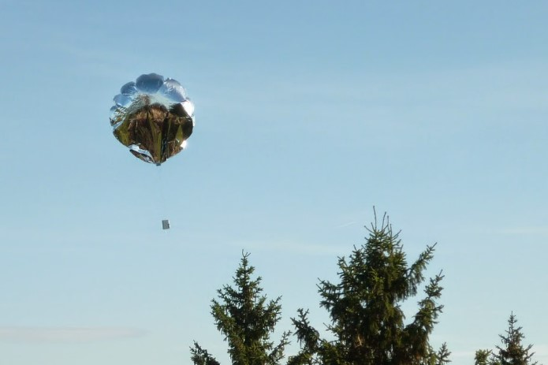

The VK2IBA-80 World Tour Project
Our goal is to fly a trackable party balloon around the globe's Troposphere, to celebrate Ian's 80 Years on Earth.

Flight/Project Director
Ian Austin
Software Engineer
Gavin Austin
Mechatronic Engineer
Brendan Austin
Logistics Management
Mark Austin
About The Project
The aim of this project is to celebrate Ian Austin’s 80 years on earth by launching and tracking a party balloon with a tiny amateur radio transmitter and GPS unit suspended below it. The balloon will transmit its location every few minutes using very low power WSPR signals on the 20 or 30-meter amateur radio band. Once airborne you’ll be able to follow along with Ian tracking the balloon’s location, altitude, and temperature. A world tour using a party balloon. Stay tuned for the date and tracking link.
What Will We See
The Tracker

The Tracker printed circuit board features:
• 33.0 x 12.7mm PCB (plus removable micro-USB connector)
• Weight: 1.8g (with micro-USB protrusion removed)
• 32-bit ARM microcontroller running QDOS
• 128K disk (implemented on EEPROM chip)
• 27mW (approximately) transmitter using Si5351A synthesizer
• Frequency coverage 136kHz to 148MHz
• LM75 temperature sensor
• Status LED
• Micro USB interface for configuration